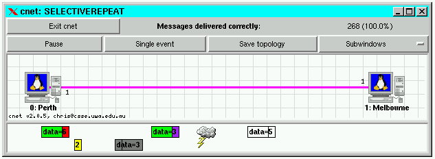

|

|
Drawing datalink frames in cnetcnet can present a limited visualisation of datalink frames traversing the Physical Layer of any LT_WAN link. Using just colours and lengths, it is possible to display both data and acknowledgment frames, and the contents of some of their fields. In combination, these features may be used to debug implementations of Data Link Layer protocols.You may view a LT_WAN link's frames by clicking the right mouse button (control-click on Macintoshes) on the link. Frames simply move from left-to-right or right-to-left until they reach their destination. If the frame becomes lost, because the link's probframeloss attribute is non-zero, only the frame's silhouette (an all white frame) will reach the destination. If the frame becomes corrupted, because the link's probframecorrupt attribute is non-zero, a lightning bolt appears and only a singed (all grey) frame will reach the destination. Of course, both data and acknowledgment frames may be lost and corrupted. Below, we see a selective-repeat protocol experiencing frame loss (the upper ghostly white data frame number 5) and frame corruption (the singed grey data frame number 3), while other data and acknowledgment frames are also being exchanged.  As with most activities in cnet, frames are drawn using an event-driven approach. If of interest, the cnet event EV_DRAWFRAME is delivered to the running protocol when cnet needs to know how to draw a frame. cnet has no knowledge of the format of the data frames it is delivering, and so the protocol writer must indicate which colours, field lengths, and strings are to be used to draw each frame. cnet defines the CnetDrawFrame datatype which provide C string constants to request colours, such as "red", "blue", .... The colours and lengths (in pixels) of up to 16 fields of each frame may be supplied. You may also request that a short text string, up to DRAWFRAME_TEXTLEN (=16) bytes in length, be drawn (centred) on each animated frame. cnet will only deliver the EV_DRAWFRAME event to the protocol once per frame, and the protocol is not, itself, responsible for drawing or moving each frame. This enables you to concentrate on writing the protocol, not any visualisation.
To request that data frames are drawn according to your own (limited) design, register an event handler to receive the EV_DRAWFRAME event (typically in your EV_REBOOT handler):
Finally, define an event handler to receive the EV_DRAWFRAME event. cnet passes to the handler, in the CnetData parameter, a pointer to an instance of the CnetDrawFrame datatype. This pointer provides access to colour, pixel (length), and text arrays, as well as a pointer to the data frame to be drawn. Again, cnet does not know the format of the protocol's data frame. In the following example code, the FRAME datatype, and its kind and seq structure fields are known to the protocol, but not to cnet. (If you're unsure of what's happening here, just copy the first few lines this code, verbatim):
This example code will draw each acknowledgment frame with 1 field, 10 pixels long, and each data frame with 2 fields, totalling 40 pixels long. Frames with a sequence number of 0 will will be drawn in red; other frames will be drawn in purple. Data frames will have a second field, representing their payload, drawn in green. Both types of frames also request that a short text string, displaying their sequence number, be drawn (centred) on their animated frames
|
cnet v3.3.1, written by Chris.McDonald@uwa.edu.au
Last modified: Thu Apr 10 4:35PM 2014